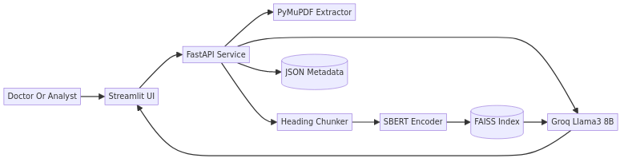
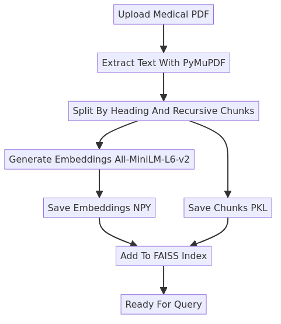
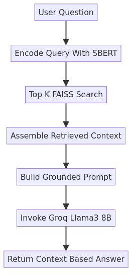

MedBot (Medical RAG Assistant)
Grounded medical Q&A over uploaded clinical PDFs
- Streamlit + FastAPI architecture
- SBERT embeddings + FAISS retrieval
- Groq LLaMA 3 8B context-based answers
- Medical PDF ingestion pipeline
MedBot is a retrieval-augmented assistant built for medical document Q&A. The system ingests medical PDFs, chunks and embeds content, indexes vectors in FAISS, and answers user questions using Groq-hosted LLaMA 3 8B constrained to retrieved evidence. The local project includes ingestion, embedding, and query logic modules that were used to validate reliable retrieval quality over medical references.
What the system solves
Medical references are long and difficult to query quickly. MedBot provides a question-answering layer that maps natural-language questions to relevant medical excerpts through semantic retrieval, then generates concise answers grounded in those excerpts.
Core capabilities
- Upload and parse medical PDFs through Streamlit ingestion workflow.
- Heading-aware + recursive chunking for better semantic context boundaries.
- Embedding generation with
all-MiniLM-L6-v2and persistence in.npyformat. - FAISS vector search to retrieve the most relevant evidence chunks per query.
- Groq LLaMA response generation from retrieved context only.
System architecture

User -> Streamlit/FastAPI -> extraction/chunking -> embeddings/FAISS -> Groq LLM response
Component summary
| Layer | Role in MedBot |
|---|---|
| Streamlit UI | Upload PDFs, trigger processing, ask questions interactively |
| FastAPI/query service | Retrieval and answer orchestration for user questions |
| PyMuPDF | PDF text extraction from clinical references |
| Chunking module | Topic/heading-aware splitting + recursive fallback chunking |
| SBERT encoder | Vector embeddings for chunks and user queries |
| FAISS index | Top-K semantic nearest-neighbor retrieval |
| Groq LLaMA 3 8B | Final context-grounded natural-language answer generation |
Ingestion flow

Upload PDF -> extract -> chunk -> embed -> save vectors/chunks -> index ready
Query flow

Question embedding -> FAISS top-K retrieval -> prompt assembly -> Groq LLM answer
Key implementation details from local code
genrate_store_embed.pyruns Streamlit ingestion, extraction, chunking, and embedding persistence.medbottest.pyloads persisted embeddings/chunks, builds FAISS index, and handles retrieval + Groq invocation.embed_viewer.pyhelps inspect generated embedding arrays during verification.unstructure_process_pdf_code/pdf.pycontains advanced PDF parsing helpers for OCR/hi-res extraction strategies.